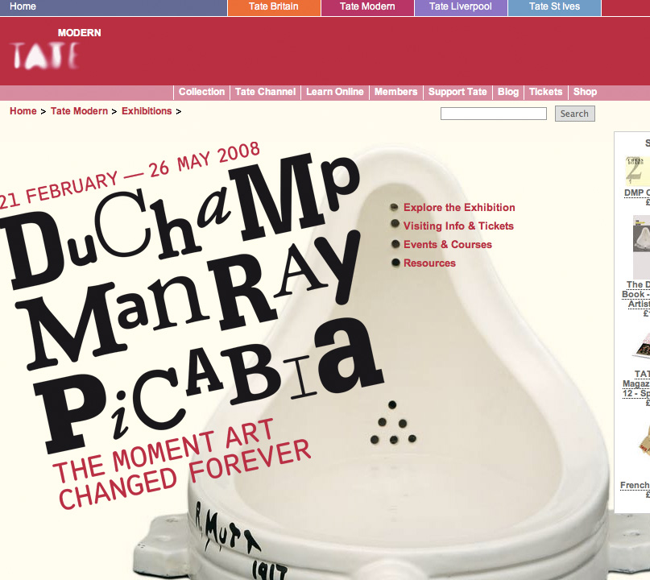
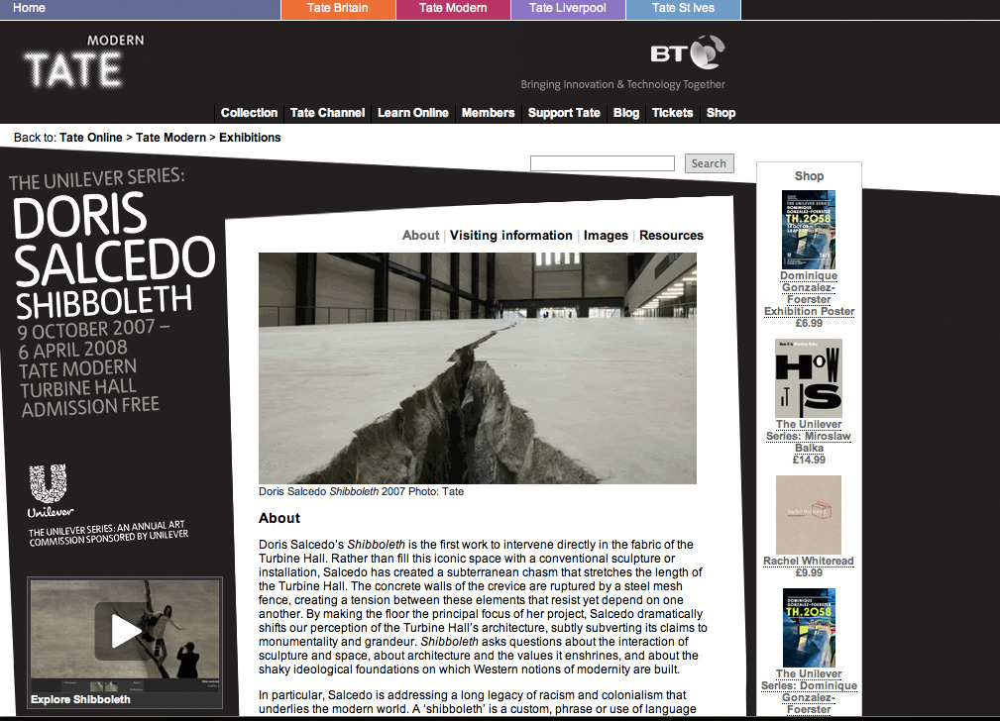
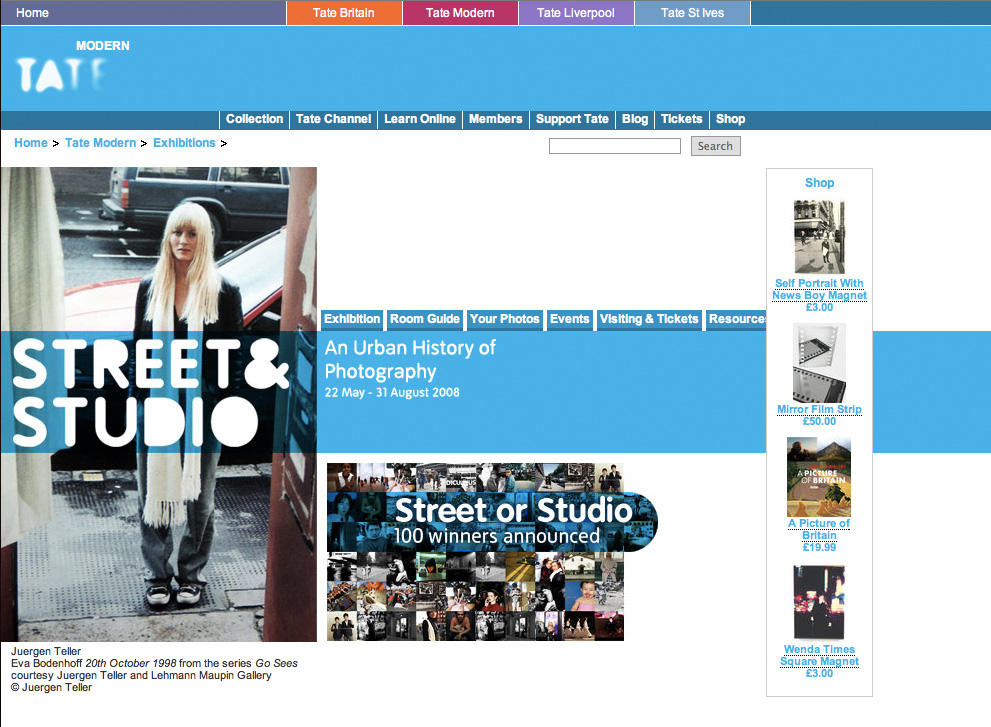
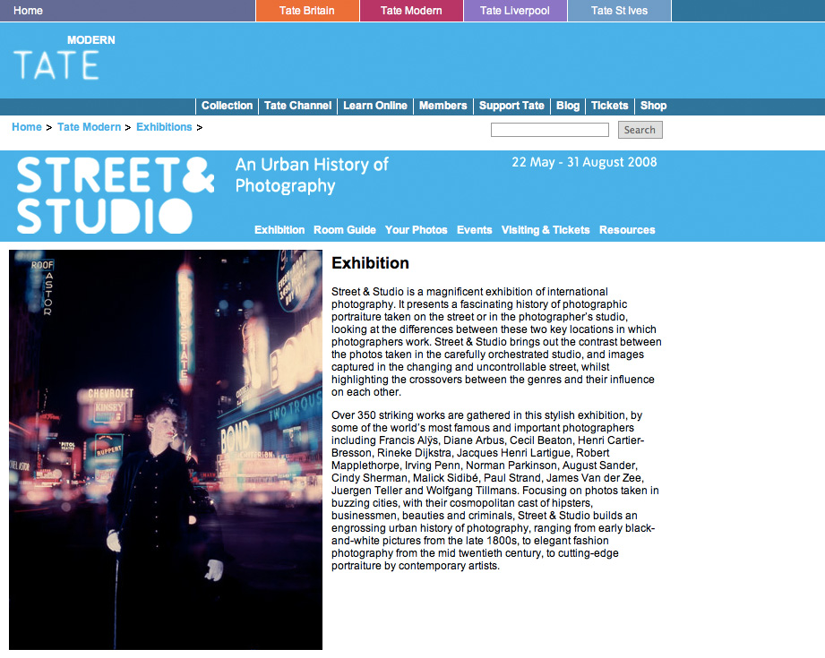
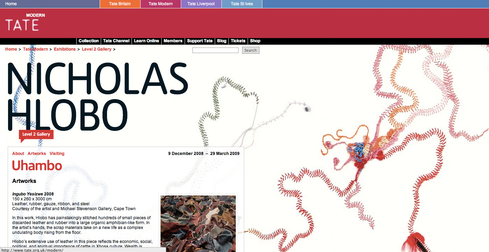

I had the pleasure of working for the Tate Gallery for 4 1/2 years, primarily looking after Tate Modern. One of my main tasks was to create a custom website for every exhibition. Usually following on from the print designs (website always came last!), I would create a design that complemented the print design along with creating room guides that allowed people to get a sneak preview or for people that couldn't get to the exhibition a chance to see what was on show.
Examples shown here include the Duchamp, Man Ray Picabia exhibition where I managed to use the urinal holes as bullet points.

Doris Salcedo print artwork came in at an angle, so I created a website where nearly everything was slightly wonky.

Street & Studio was a fairly minimal design with a simple blue strip that I carried through each page.

I had more freedom (and less time) with Tate Modern's smaller exhibition space Level 2 Gallery, and got to create my own layouts, not following any existing print designs - so I would design sites inspired by the artwork on display. Here I used Nicholas Hlobo's beautiful patchworks as a colourful background with translucent text boxes.
